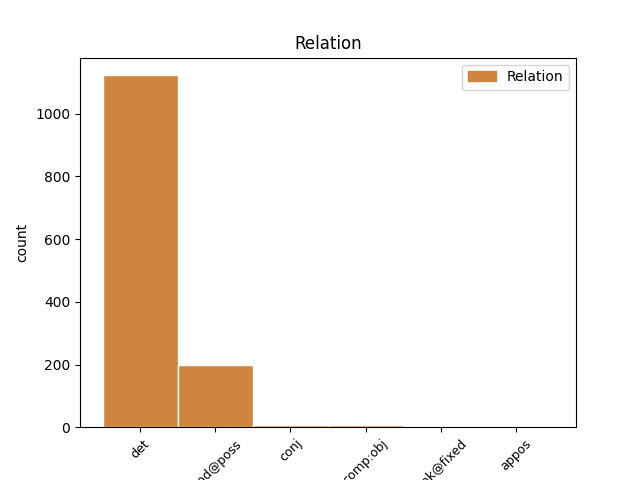
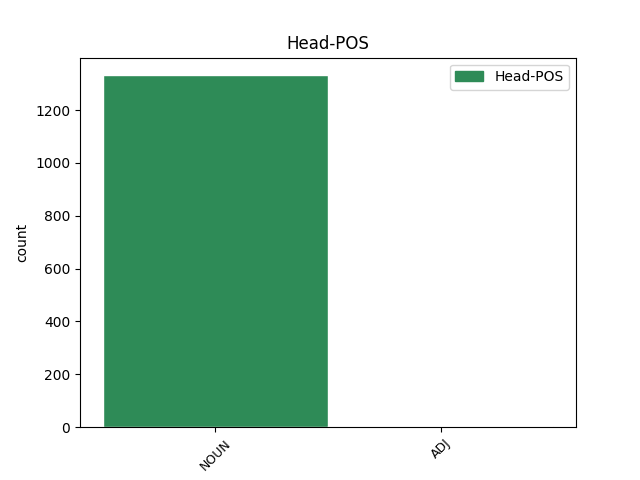
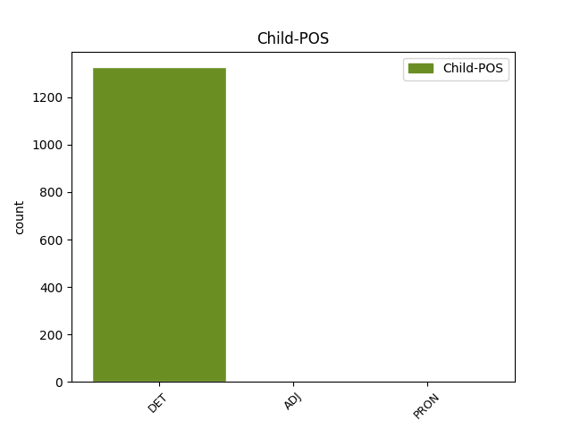

Distribution of features within this leaf



Agreement Rules sorted by frequency.
- When the dependent token is the determiner(det) of the head token, and the dependent token is DET.
1 bha _ _ _ _ 0 _ _ _
2 an an DET Tdsf Gender=Fem|Number=Sing 3 det _ _
3 cuid cuid NOUN Ncsfn Case=Nom|Gender=Fem|Number=Sing 0 _ _ _
4 cluich _ _ _ _ 0 _ _ _
5 aig _ _ _ _ 0 _ _ _
6 MacLare _ _ _ _ 0 _ _ _
7 gu _ _ _ _ 0 _ _ _
8 math _ _ _ _ 0 _ _ _
9 cunnartach _ _ _ _ 0 _ _ _
10 ann _ _ _ _ 0 _ _ _
11 an _ _ _ _ 0 _ _ _
12 siud _ _ _ _ 0 _ _ _
1 Car _ _ _ _ 0 _ _ _
2 son _ _ _ _ 0 _ _ _
3 air _ _ _ _ 0 _ _ _
4 thalamh _ _ _ _ 0 _ _ _
5 a _ _ _ _ 0 _ _ _
6 rinn _ _ _ _ 0 _ _ _
7 i _ _ _ _ 0 _ _ _
8 a a DET Dp3sm Gender=Masc|Number=Sing|Person=3 9 mod@poss _ _
9 leithid leithid NOUN Ncsfn Case=Nom|Gender=Fem|Number=Sing 0 _ _ _
10 ? _ _ _ _ 0 _ _ _
1 Chan _ _ _ _ 0 _ _ _
2 eil _ _ _ _ 0 _ _ _
3 teagamh _ _ _ _ 0 _ _ _
4 ann _ _ _ _ 0 _ _ _
5 nach _ _ _ _ 0 _ _ _
6 fhaigh _ _ _ _ 0 _ _ _
7 e _ _ _ _ 0 _ _ _
8 dreuchd _ _ _ _ 0 _ _ _
9 eile _ _ _ _ 0 _ _ _
10 bho _ _ _ _ 0 _ _ _
11 a a DET Dp3sm Gender=Masc|Number=Sing|Person=3 13 comp:obj _ _
12 dheagh _ _ _ _ 0 _ _ _
13 charaid caraid NOUN Ncsmd Case=Dat|Gender=Masc|Number=Sing 0 _ _ _
14 , _ _ _ _ 0 _ _ _
15 Tonaidh _ _ _ _ 0 _ _ _
16 Blàrach _ _ _ _ 0 _ _ _
17 , _ _ _ _ 0 _ _ _
18 a _ _ _ _ 0 _ _ _
19 dh’aithghearr _ _ _ _ 0 _ _ _
20 mura _ _ _ _ 0 _ _ _
21 bheil _ _ _ _ 0 _ _ _
22 mi _ _ _ _ 0 _ _ _
23 air _ _ _ _ 0 _ _ _
24 mo _ _ _ _ 0 _ _ _
25 mhealladh _ _ _ _ 0 _ _ _
26 . _ _ _ _ 0 _ _ _
1 Tha _ _ _ _ 0 _ _ _
2 na _ _ _ _ 0 _ _ _
3 Ruiseanaich _ _ _ _ 0 _ _ _
4 a' _ _ _ _ 0 _ _ _
5 tighinn _ _ _ _ 0 _ _ _
6 an _ _ _ _ 0 _ _ _
7 àite _ _ _ _ 0 _ _ _
8 saighdearan _ _ _ _ 0 _ _ _
9 Duitseach duitseach ADJ Aq-pmg Case=Gen|Gender=Masc|Number=Plur 0 _ _ _
10 agus _ _ _ _ 0 _ _ _
11 Gearmailteach gearmailteach ADJ Aq-pmg Case=Gen|Gender=Masc|Number=Plur 9 conj _ SpaceAfter=No
12 , _ _ _ _ 0 _ _ _
13 ach _ _ _ _ 0 _ _ _
14 tha _ _ _ _ 0 _ _ _
15 muinntir _ _ _ _ 0 _ _ _
16 an _ _ _ _ 0 _ _ _
17 àite _ _ _ _ 0 _ _ _
18 a' _ _ _ _ 0 _ _ _
19 diùltadh _ _ _ _ 0 _ _ _
20 gnothaich _ _ _ _ 0 _ _ _
21 a _ _ _ _ 0 _ _ _
22 ghabhail _ _ _ _ 0 _ _ _
23 riutha _ _ _ _ 0 _ _ _
24 's _ _ _ _ 0 _ _ _
25 iad _ _ _ _ 0 _ _ _
26 ag _ _ _ _ 0 _ _ _
27 ràdh _ _ _ _ 0 _ _ _
28 gun _ _ _ _ 0 _ _ _
29 robh _ _ _ _ 0 _ _ _
30 na _ _ _ _ 0 _ _ _
31 Ruiseanaich _ _ _ _ 0 _ _ _
32 a' _ _ _ _ 0 _ _ _
33 cumail _ _ _ _ 0 _ _ _
34 cùl-taic _ _ _ _ 0 _ _ _
35 ri _ _ _ _ 0 _ _ _
36 na _ _ _ _ 0 _ _ _
37 Sèirbich _ _ _ _ 0 _ _ _
38 ann _ _ _ _ 0 _ _ _
39 a' _ _ _ _ 0 _ _ _
40 cogadh _ _ _ _ 0 _ _ _
41 Chosobho _ _ _ _ 0 _ _ _
42 . _ _ _ _ 0 _ _ _
1 Dh’innis _ _ _ _ 0 _ _ _
2 e _ _ _ _ 0 _ _ _
3 dhaibh _ _ _ _ 0 _ _ _
4 gun _ _ _ _ 0 _ _ _
5 deach _ _ _ _ 0 _ _ _
6 e _ _ _ _ 0 _ _ _
7 air _ _ _ _ 0 _ _ _
8 chall _ _ _ _ 0 _ _ _
9 ann _ _ _ _ 0 _ _ _
10 an _ _ _ _ 0 _ _ _
11 ceò ceò NOUN Ncsmd Case=Dat|Gender=Masc|Number=Sing 0 _ _ _
12 's _ _ _ _ 0 _ _ _
13 e e PRON Pp3sm Gender=Masc|Number=Sing|Person=3 11 conj _ _
14 'g _ _ _ _ 0 _ _ _
15 iasgach _ _ _ _ 0 _ _ _
16 . _ _ _ _ 0 _ _ _
1 Bha _ _ _ _ 0 _ _ _
2 esan _ _ _ _ 0 _ _ _
3 a' _ _ _ _ 0 _ _ _
4 bruidhinn _ _ _ _ 0 _ _ _
5 an _ _ _ _ 0 _ _ _
6 dèidh _ _ _ _ 0 _ _ _
7 mar _ _ _ _ 0 _ _ _
8 a _ _ _ _ 0 _ _ _
9 rinn _ _ _ _ 0 _ _ _
10 Teàrlach _ _ _ _ 0 _ _ _
11 Peteranna _ _ _ _ 0 _ _ _
12 , _ _ _ _ 0 _ _ _
13 a _ _ _ _ 0 _ _ _
14 tha _ _ _ _ 0 _ _ _
15 'na _ _ _ _ 0 _ _ _
16 bhall _ _ _ _ 0 _ _ _
17 de _ _ _ _ 0 _ _ _
18 Chomataidh _ _ _ _ 0 _ _ _
19 chomhairleachaidh _ _ _ _ 0 _ _ _
20 seirbhis _ _ _ _ 0 _ _ _
21 aiseig _ _ _ _ 0 _ _ _
22 , _ _ _ _ 0 _ _ _
23 nan _ _ _ _ 0 _ _ _
24 eilean _ _ _ _ 0 _ _ _
25 mu mu ADJ Aq-pmg Case=Gen|Gender=Masc|Number=Plur 0 _ _ _
26 dheas deas ADJ Aq-pmg Case=Gen|Gender=Masc|Number=Plur 25 unk@fixed _ _
27 air _ _ _ _ 0 _ _ _
28 a’ _ _ _ _ 0 _ _ _
29 chlàr-ama _ _ _ _ 0 _ _ _
30 ùr _ _ _ _ 0 _ _ _
31 . _ _ _ _ 0 _ _ _
1 Tha _ _ _ _ 0 _ _ _
2 an _ _ _ _ 0 _ _ _
3 t-Ollamh _ _ _ _ 0 _ _ _
4 Eric _ _ _ _ 0 _ _ _
5 Richards _ _ _ _ 0 _ _ _
6 , _ _ _ _ 0 _ _ _
7 Sasannach _ _ _ _ 0 _ _ _
8 a _ _ _ _ 0 _ _ _
9 tha _ _ _ _ 0 _ _ _
10 ag _ _ _ _ 0 _ _ _
11 obair _ _ _ _ 0 _ _ _
12 an _ _ _ _ 0 _ _ _
13 Astràilia _ _ _ _ 0 _ _ _
14 ach _ _ _ _ 0 _ _ _
15 a _ _ _ _ 0 _ _ _
16 bha _ _ _ _ 0 _ _ _
17 bliadhnaichean _ _ _ _ 0 _ _ _
18 an _ _ _ _ 0 _ _ _
19 Oilthigh _ _ _ _ 0 _ _ _
20 Shruighlea _ _ _ _ 0 _ _ _
21 , _ _ _ _ 0 _ _ _
22 air _ _ _ _ 0 _ _ _
23 mòran _ _ _ _ 0 _ _ _
24 a _ _ _ _ 0 _ _ _
25 sgrìobhadh _ _ _ _ 0 _ _ _
26 mu _ _ _ _ 0 _ _ _
27 na _ _ _ _ 0 _ _ _
28 fuadaichean _ _ _ _ 0 _ _ _
29 , _ _ _ _ 0 _ _ _
30 ach _ _ _ _ 0 _ _ _
31 an _ _ _ _ 0 _ _ _
32 uair _ _ _ _ 0 _ _ _
33 a _ _ _ _ 0 _ _ _
34 nochd _ _ _ _ 0 _ _ _
35 a’ _ _ _ _ 0 _ _ _
36 chiad _ _ _ _ 0 _ _ _
37 aithris _ _ _ _ 0 _ _ _
38 mun _ _ _ _ 0 _ _ _
39 leabhar _ _ _ _ 0 _ _ _
40 ùr _ _ _ _ 0 _ _ _
41 aige _ _ _ _ 0 _ _ _
42 , _ _ _ _ 0 _ _ _
43 am _ _ _ _ 0 _ _ _
44 measg _ _ _ _ 0 _ _ _
45 na _ _ _ _ 0 _ _ _
46 chaidh _ _ _ _ 0 _ _ _
47 a _ _ _ _ 0 _ _ _
48 ràdh _ _ _ _ 0 _ _ _
49 bha _ _ _ _ 0 _ _ _
50 gun _ _ _ _ 0 _ _ _
51 robh _ _ _ _ 0 _ _ _
52 e _ _ _ _ 0 _ _ _
53 dol _ _ _ _ 0 _ _ _
54 a _ _ _ _ 0 _ _ _
55 thoirt _ _ _ _ 0 _ _ _
56 dealbh _ _ _ _ 0 _ _ _
57 gleansach _ _ _ _ 0 _ _ _
58 air _ _ _ _ 0 _ _ _
59 an _ _ _ _ 0 _ _ _
60 duine _ _ _ _ 0 _ _ _
61 ’s _ _ _ _ 0 _ _ _
62 e _ _ _ _ 0 _ _ _
63 a’ _ _ _ _ 0 _ _ _
64 cumail _ _ _ _ 0 _ _ _
65 a-mach _ _ _ _ 0 _ _ _
66 gun _ _ _ _ 0 _ _ _
67 robh _ _ _ _ 0 _ _ _
68 na _ _ _ _ 0 _ _ _
69 Gaidheil gaidheil NOUN Ncpmn Case=Nom|Gender=Masc|Number=Plur 0 _ _ _
70 iad iad PRON Pp3p Number=Plur|Person=3 69 appos _ _
71 fhéin _ _ _ _ 0 _ _ _
72 ri _ _ _ _ 0 _ _ _
73 ’n _ _ _ _ 0 _ _ _
74 coireachadh _ _ _ _ 0 _ _ _
75 son _ _ _ _ 0 _ _ _
76 na _ _ _ _ 0 _ _ _
77 thachair _ _ _ _ 0 _ _ _
78 riutha _ _ _ _ 0 _ _ _
79 . _ _ _ _ 0 _ _ _
Disagree Examples:
1 Chan _ _ _ _ 0 _ _ _
2 eil _ _ _ _ 0 _ _ _
3 e _ _ _ _ 0 _ _ _
4 air _ _ _ _ 0 _ _ _
5 aithris _ _ _ _ 0 _ _ _
6 gun _ _ _ _ 0 _ _ _
7 tug _ _ _ _ 0 _ _ _
8 Iain _ _ _ _ 0 _ _ _
9 riamh _ _ _ _ 0 _ _ _
10 iomradh _ _ _ _ 0 _ _ _
11 air _ _ _ _ 0 _ _ _
12 a a DET Dp3sf Gender=Fem|Number=Sing|Person=3 13 mod@poss _ _
13 sùilean sùil NOUN Ncpfd Case=Dat|Gender=Fem|Number=Plur 0 _ _ _
14 . _ _ _ _ 0 _ _ _
1 Thug _ _ _ _ 0 _ _ _
2 iad _ _ _ _ 0 _ _ _
3 ainmean _ _ _ _ 0 _ _ _
4 seachad _ _ _ _ 0 _ _ _
5 da _ _ _ _ 0 _ _ _
6 chèile _ _ _ _ 0 _ _ _
7 is _ _ _ _ 0 _ _ _
8 thuig _ _ _ _ 0 _ _ _
9 iad _ _ _ _ 0 _ _ _
10 gum _ _ _ _ 0 _ _ _
11 b' _ _ _ _ 0 _ _ _
12 e _ _ _ _ 0 _ _ _
13 Inis _ _ _ _ 0 _ _ _
14 a _ _ _ _ 0 _ _ _
15 b' _ _ _ _ 0 _ _ _
16 ainm _ _ _ _ 0 _ _ _
17 don _ _ _ _ 0 _ _ _
18 tè _ _ _ _ 0 _ _ _
19 òig _ _ _ _ 0 _ _ _
20 , _ _ _ _ 0 _ _ _
21 a _ _ _ _ 0 _ _ _
22 bha _ _ _ _ 0 _ _ _
23 ann _ _ _ _ 0 _ _ _
24 am _ _ _ _ 0 _ _ _
25 beagan _ _ _ _ 0 _ _ _
26 tìde _ _ _ _ 0 _ _ _
27 a' _ _ _ _ 0 _ _ _
28 briodal _ _ _ _ 0 _ _ _
29 ri _ _ _ _ 0 _ _ _
30 Iain _ _ _ _ 0 _ _ _
31 ach _ _ _ _ 0 _ _ _
32 a' _ _ _ _ 0 _ _ _
33 cromadh _ _ _ _ 0 _ _ _
34 a a DET Dp3sf Gender=Fem|Number=Sing|Person=3 35 mod@poss _ _
35 sùilean sùil NOUN Ncpfg Case=Gen|Gender=Fem|Number=Plur 0 _ _ _
36 ri _ _ _ _ 0 _ _ _
37 Tormod _ _ _ _ 0 _ _ _
38 an _ _ _ _ 0 _ _ _
39 dràsta _ _ _ _ 0 _ _ _
40 's _ _ _ _ 0 _ _ _
41 a-rithist _ _ _ _ 0 _ _ _
42 . _ _ _ _ 0 _ _ _
1 Nuair _ _ _ _ 0 _ _ _
2 a _ _ _ _ 0 _ _ _
3 thàinig _ _ _ _ 0 _ _ _
4 an _ _ _ _ 0 _ _ _
5 eachdraidh _ _ _ _ 0 _ _ _
6 gu _ _ _ _ 0 _ _ _
7 ceann _ _ _ _ 0 _ _ _
8 , _ _ _ _ 0 _ _ _
9 chuir _ _ _ _ 0 _ _ _
10 i _ _ _ _ 0 _ _ _
11 a a DET Dp3sf Gender=Fem|Number=Sing|Person=3 13 mod@poss _ _
12 dà _ _ _ _ 0 _ _ _
13 bhois bois NOUN Ncdfn Case=Nom|Gender=Fem|Number=Dual 0 _ _ _
14 bhuig _ _ _ _ 0 _ _ _
15 ri _ _ _ _ 0 _ _ _
16 chèile _ _ _ _ 0 _ _ _
17 mar _ _ _ _ 0 _ _ _
18 gu _ _ _ _ 0 _ _ _
19 robh _ _ _ _ 0 _ _ _
20 i _ _ _ _ 0 _ _ _
21 ag _ _ _ _ 0 _ _ _
22 ùrnaigh _ _ _ _ 0 _ _ _
23 is _ _ _ _ 0 _ _ _
24 thuirt _ _ _ _ 0 _ _ _
25 i _ _ _ _ 0 _ _ _
26 , _ _ _ _ 0 _ _ _
27 " _ _ _ _ 0 _ _ _
28 Tha _ _ _ _ 0 _ _ _
29 a' _ _ _ _ 0 _ _ _
30 ghealach _ _ _ _ 0 _ _ _
31 slàn _ _ _ _ 0 _ _ _
32 an _ _ _ _ 0 _ _ _
33 ath-oidhch' _ _ _ _ 0 _ _ _
34 . _ _ _ _ 0 _ _ _
1 Bha _ _ _ _ 0 _ _ _
2 i _ _ _ _ 0 _ _ _
3 air _ _ _ _ 0 _ _ _
4 a _ _ _ _ 0 _ _ _
5 suaineadh _ _ _ _ 0 _ _ _
6 ann _ _ _ _ 0 _ _ _
7 an _ _ _ _ 0 _ _ _
8 cleòca _ _ _ _ 0 _ _ _
9 dubh _ _ _ _ 0 _ _ _
10 bho _ _ _ _ 0 _ _ _
11 mhullach _ _ _ _ 0 _ _ _
12 a _ _ _ _ 0 _ _ _
13 cinn _ _ _ _ 0 _ _ _
14 gu _ _ _ _ 0 _ _ _
15 a a DET Dp3sf Gender=Fem|Number=Sing|Person=3 16 mod@poss _ _
16 h-adhbrannan adhbra NOUN Ncpmd Case=Dat|Gender=Masc|Number=Plur 0 _ _ _
17 . _ _ _ _ 0 _ _ _
1 Cha _ _ _ _ 0 _ _ _
2 do _ _ _ _ 0 _ _ _
3 rinn _ _ _ _ 0 _ _ _
4 i _ _ _ _ 0 _ _ _
5 oidhirp _ _ _ _ 0 _ _ _
6 cas _ _ _ _ 0 _ _ _
7 a _ _ _ _ 0 _ _ _
8 chur _ _ _ _ 0 _ _ _
9 air _ _ _ _ 0 _ _ _
10 talamh _ _ _ _ 0 _ _ _
11 is _ _ _ _ 0 _ _ _
12 a a DET Dp3sf Gender=Fem|Number=Sing|Person=3 13 mod@poss _ _
13 làmhan làmh NOUN Ncpfn Case=Nom|Gender=Fem|Number=Plur 0 _ _ _
14 mu _ _ _ _ 0 _ _ _
15 amhaich _ _ _ _ 0 _ _ _
16 , _ _ _ _ 0 _ _ _
17 is _ _ _ _ 0 _ _ _
18 ghiùlain _ _ _ _ 0 _ _ _
19 e _ _ _ _ 0 _ _ _
20 i _ _ _ _ 0 _ _ _
21 gu _ _ _ _ 0 _ _ _
22 [?] _ _ _ _ 0 _ _ _
23 nan _ _ _ _ 0 _ _ _
24 craobh _ _ _ _ 0 _ _ _
25 . _ _ _ _ 0 _ _ _